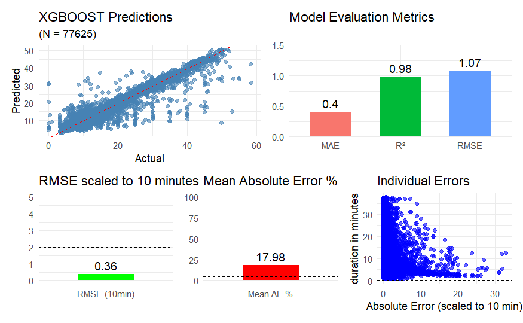

Final Report
Preface
This report was created as part of the Masters study program Data Science of the University of Applied Sciences Vienna. All authors contributed equally on this project and have been part from the beginning and were part of all decision made.
All of the used data is openly accessible and the sources are referenced in the chapters below.
We would like to thank Dr. Andreas Reschreiter for his advisory role on the report.
Introduction
The aim of this report was to describe and document the process of building a fare prediction model for chicago taxi fares, based on the openly available data from the city of chicago (dataset). The reason for this project was to train and gain experience on machine learning model, handling large datasets, and planning and finishing a datadriven project from the first idea to the deployed prototype.
Goals
To measure the success of this project certain goals and requirements were imposed on the project team. Some of these goals and requirements were set by Dr. Anderas Reschreiter as part of the assignment other goals, the project team set for them self.
The requirements for the assignment were to develop a model that can predict a taxi fare based on the input of two addresses (pickup and drop off) as well as a time when the taxi should pick up a potential customer. Therefor a shiny app should be developed that allows a user to input these information quickly.
The goals the team set for them self are described below.
Qualitative Objectives
Develop a predictive model to estimate the fare amount for taxi trips in Chicago
Evaluate various modeling approaches and deploy the best solution
Quantitative Objectives
Achieve RM (SE per 10 minutes) < $2 on the validation set
Achieve mean AE/fare < 5% for on the validation set
Compare performance across 5 different model types
Models
The models that were considered and analysed in this report were chosen for their effectiveness with large datasets. All models were tested and compared with the same quantitative objectives.
Neural network
XGBoost
Random Forest
Linear Model
GLM
Planned Process
The process of this project and report can be separated in 7 steps.
data aquisition
exploratory data analysis
data cleaning
dataset preparation
model training and evaluation
ui development
combining the final works
Each of these steps is discussed in a separate chapter. During the development and project phase multiple of those steps were done simultaneously to enable a swift and fast process progression.
Data acquisition
As mentioned in the introduction the data for this project was made available by the city of chicago via their online data platform https://data.cityofchicago.org/. The dataset provides information on taxi fares from the year 2013 until the year 2023. In these ten years 212 million trips were recorded amounting to approximately nine GB of data. The data was made available via a direct data download or an exposed API-Endpoint.
challenges
The first challenge faced in this project was the data acquisition, although the data is openly available the downloading process showed to be very difficult. The direct data download only allowed for all rows to be downloaded in one file and due to the limited downloading bandwidth from the data servers the download was not able to be completed. The API Endpoint uses the Socrata Framework, allowing for easy querying of the data. However the API also had an imposed limit for their bandwitdh resulting in a slow month-wise download in 50.000 row steps.
[insert downloading code]
raw data
the data included these 23 columns.
| Column Name | Description | Data Type |
|---|---|---|
| Trip ID | identifies the trip | Text |
| Taxi ID | identifies the taxi | Text |
| Trip Start Timestamp | when did the trip start | Floating Timestamp |
| Trip End Timestamp | when did the trip end | Floating Timestamp |
| Trip Seconds | how long was the trip in seconds | Number |
| Trip Miles | how far was the trip in miles | Number |
| Pickup Census Tract | in which census tract was the passenger picked up | Text |
| Dropoff Census Tract | in which census tract was the passenger dropped off | Text |
| Pickup Community Area | in which community area was the passenger picked up | Number |
| Dropoff Community Area | in which community area was the passenger dropped of | Number |
| Fare | how much was the fare | Number |
| Tips | how much tip was given | Number |
| Tolls | how many tolls were payed | Number |
| Extras | how many extra payments were made | Number |
| Trip Total | how much was the trip in total | Number |
| Payment Type | what kind of payment was used | Text |
| Company | which taxi company was used | Text |
| Pickup Centroid Latitude | the centroid latitude of the pickup census tract | Number |
| Pickup Centroid Longitude | the centroid longitude of the pickup census tract | Number |
| Pickup Centroid Location | combined longitude and latitude of the centroid of the pickup census tract | Point |
| Dropoff Centroid Latitude | the centroid latitude of the dropoff census tract | Number |
| Dropoff Centroid Longitude | the centroid longitude of the dropoff census tract | Number |
| Dropoff Centroid Location | combined longitude and latitude of the centroid of the dropoff census tract | Point |
Data cleaning
The API allowed for a first step of data cleaning while downloading. Through a filter only rows that contained information in all columns where downloaded. Due to the large amount of available data missing or possible incorrect data was dropped.
To further ensure the correctness of the data a few filters were applied to check for realistic measurements.
The average speed calculated from the Trip Seconds and Trip Miles should lie between 10 and 70 mph.
The Fare, Tolls, Extras and Tips must add up to the Trip Total.
The Pickup Centroid Location and Dropoff Centroid Location must lie within the Area of Chicago.
Dataset preparation
Two allow for a fair comparison between the selected models for this project, multiple datasets with different sizes were prepared to be used as training and test data.
column selection
The first step in the dataset selection was the selection of features. The final prototype should allow users to select a pickup address and a dropoff address. The app should then retrieve information like the current date and time as well as information on the most likely route the taxi is going to take. Based on that the distance and also the time for the ride can be estimated.
As the model will only receive that information the following columns were selected from the dataset.
Trip Start Timestamp
Trip Seconds
Trip Miles
Pickup Centroid Latitude
Pickup Centroid Longitude
Dropoff Centroid Latitude
Dropoff Centroid Longitude
Fare
feature engineering
Before using these columns for the training of model the Trip Start Timestamp was converted into year, month, day (1-31), weekday (Monday - Sunday) and time decimal (time of the day converted into a decimal number).
Therefore creating a dataset with 11 features and one target variable (Fare).
The next step was the removal of outliers. As the coordinates have been already filtered in the previous steps. The outliers were selected based on the following features as well as the following feature combinations.
Trip Seconds
Trip Miles
Fare
Fare/Trip Seconds
Fare/Trip Miles
Trip Miles/Trip Seconds
The Interquartile Range was used as the outlier detection method.
stratifying process
To ensure a model with no blindspots, the datasets were stratifyed based on their features to ensure each dataset would have a balanced set of featurevalues. An example for this stratifying can be seen with the time_decimal column. In the original data there is a lack of data for the time around 5 a.m. after the stratifying process the lack is still visible but was reduced significantly.
dataset sizes
There were different sizes of datasets created to allow for quicker training of the model and extensive testing. In total four datasets were created with 10.000, 50.000, 100.000 and 500.000 rows.
Model training and evaluation
With the stratified datasets in place the model training was able to commence.
All models were trained and tested on the same datasets with the same train/test splits to ensure a fair comparison.
The model were evaluated based on common metrics for regression models such as root mean squared error, R² and the mean absolute error, as well as the metrics root mean square error per 10 minutes and mean absolute error in percent which the team has set as their own goals.
In the following table the results of the training, testing and validating can be found for the best result for each model.
| Model | RMSE | MAE | R² | RMSE per 10 minutes | MAE in % |
|---|---|---|---|---|---|
| LM | 1.43 | 0.63 | 0.81 | 0.71 | 5.83 |
| GLM | 1.43 | 0.63 | 0.81 | 0.71 | 5.83 |
| XGBOOST | 0.82 | 0.35 | 0.94 | 0.41 | 3.03 |
| RF | 0.8 | 0.42 | 0.93 | 0.8 | 4.04 |
| NN | 1.27 | 0.64 | 0.83 | 1.27 | 6.63 |
Plotting the results of one of the models reveals higher error margin with shorter trips. As well as less accurate model predictions with larger datasets.
In this case the XGBOOST over prices the fares for smaller amounts and under prices the fares for higher amounts. Therefore going for an average between the two extremes. It still achieves the set goal for the RMSE scaled to 10 minutes but fails to achieve and MAE in % below 5 Percent.
Scaling the test and train data revealed no better metrics. The RMSE (10 min) as well as the Mean AE % increased slightly.

Model selection
Although none of the model have reached the expected goals consistantly over all dataset sizes, XGBoost has come closest. In the smallest datasets it has reached both goals of an RMSE per 10 minutes smaller than 2 and the MAE in % smaller than 5. Therefor XGBoost was choosen as the model to be used in the prototype.
Shiny App
To create a prototype for users to select pickup and dropoff positions, the shiny framework was used. A user has the possibility to add coordinates and calculate their fare. The prototype also visualizes the path which was calculated using open street maps.
The shiny app when opened
The shiny app when a path is calculated
Conclusion
This project has shown that multiple different model can be used for the task of fare prediction. XGBoost has been shown to be the most accurate on this particular dataset however the other models such as Random Forrest or Neural networks could be fine tuned to achieve the same metrics. However the training for those two models takes significantly longer than for XGBoost.